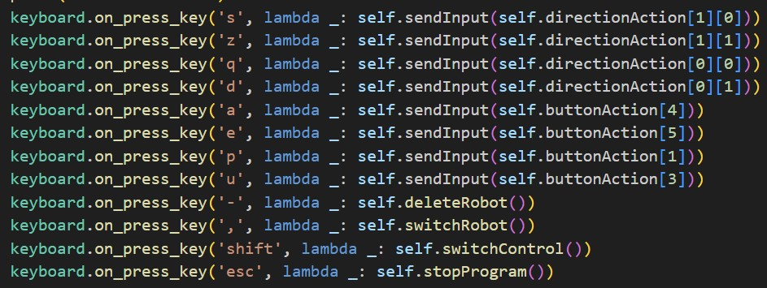
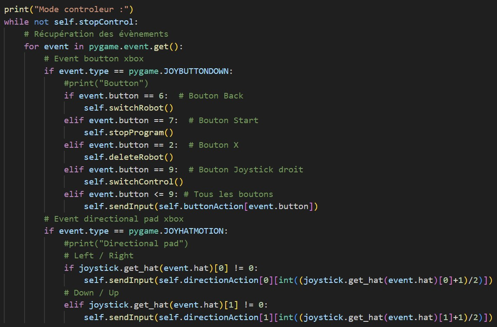
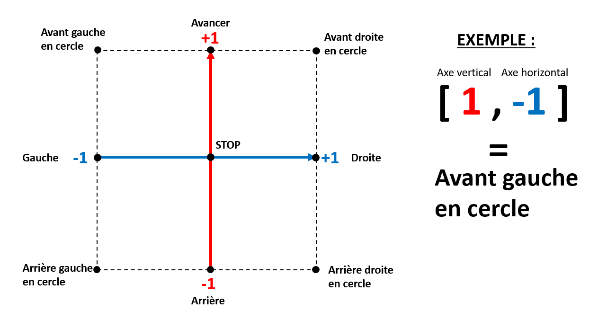

Index Contenu
I. Présentation et objectif de la partie du Controller
Cette partie vise à gérer le contrôle des différents robots du Techlab. L'objectif est de simplifier et uniformiser le contrôle de ces derniers en utilisant un programme unique développé dans le langage Python. Ce programme est constitué de plusieurs fichiers permettant son bon fonctionnement, notamment un fichier main pour lancer le programme, un fichier main_interface permettant de configurer la liste des robots à utiliser avec leur IP respective, un fichier interface_robot qui permet de se positionner sur un robot particulier à contrôler parmi ceux présent dans la liste et se connecter à streamlit, un fichier input_manager permettant de gérer les inputs clavier/manette et pour finir des fichiers de contrôles spécifiques à chaque robot afin d’adapter la commande à envoyer à ces derniers.
II. Gestion des inputs
Le programme reconnait les inputs du clavier et de la manette Xbox360 grâce aux librairies keyboard pour le clavier et pygame pour la manette. Les touches sont associées à des actions spécifiques, telles qu’avancer, reculer, tourner à droite ou à gauche… Il est uniquement possible d’utiliser soit le clavier soit la manette afin d’éviter les conflits dans la gestion des inputs. Il y a cependant une touche permettant d’échanger facilement de modes d’input. Par défaut, le clavier est utilisé, lors du changement de périphérique, si aucune manette n’est détectée, le périphérique reste alors sur le clavier. Tous les inputs possibles d’utilisation se limite aux nombres de bouton disponible sur une manette. Ces derniers sont répertoriés dans 2 variables : buttonAction et directionAction.

Ensuite, ces commandes sont attribuées à l’aide du code suivant pour le clavier :

Et pour la manette :

III. Contrôle des différents types de robots
Le programme utilise différentes méthodes de connexion en fonction du robot. Les robots, sont directement connectés par wifi à l’aide d’une connexion permanente qui est établie avec ces derniers dès le début du programme lorsque la liste des robots est chargée par le programme.

Gestion de la connexion aux robots
Chaque robot nécessite un contrôleur spécifique pour interpréter les instructions génériques du programme. Les différents inputs présents dans les variables évoqués précédemment sont convertis en actions compréhensibles par le robot concerné en traduisant l’action générique du programme en un signal spécifique au robot. L'ajout d'un nouveau type de robot est donc simplifié, il suffit de créer un nouveau contrôleur spécifique à ce robot. Voici un court exemple de la façon dont cela peut se présenter :

Exemple de communication avec un robot
La liste des robots est prédéfinie dans le programme et peut être modifiée manuellement. Il nous est également possible de contrôler un robot différent sans quitter le programme en appuyant sur une touche à condition que ce dernier soit dans la liste des robots prédéfinie dans le fichier main_interface comme nous pouvons le voir ici :

Exemple de liste de robots
IV. Envoi des informations à Streamlit
Chaque robot se voit attribuer un ID unique permettant à Streamlit de les différencier. Soit, dans le cas des robots qui ne donne aucun retour de leur déplacement, le programme envoie les informations de mouvement à Streamlit qui affiche une carte des déplacements du robot, soit le robot envoie directement lui-même ces informations. L’envoie des informations à streamlit par ce programme se passe après que l’action de déplacement a été correctement envoyé au robot en question. Les données sont envoyées via un socket créé au démarrage du programme et à l’aide de la bibliothèque pickle afin d’envoyer une liste permettant de minimiser la taille du paquet tout en conservant un maximum d’informations. Les données envoyées sont sous la forme [id, [action]]. « action » peut prendre plusieurs valeur et plusieurs formes. Soit « action » est de la forme [a,b] pour faire des mouvements soit une chaîne de caractères avec soit « exit » pour quitter la connexion soit « suppr » pour enlever un robot. Lorsque « action » est de la forme [a,b], voici un schéma expliquant son fonctionnement.

Explication des actions
V. Problèmes rencontrés
Durant les cinq semaines de projet, nous avons rencontré un problème significatif pour la gestion du contrôleur. Ce problème fut l’usage de threads qui s’est avéré trop complexe. En effet, l’usage de threads ralentissait trop le programme et ne permettait pas son bon fonctionnement. Les threads auraient permis de pouvoir séparer correctement l’attribution des ressources pour la connexion avec streamlit ou encore celle avec les différents robots. En effet, avec l’usage de thread, on pourrait facilement contrôler plusieurs robots en simultané sur un seul ordinateur.
VI. État actuel du projet et améliorations
Actuellement, le programme permet de contrôler de manière basique des robots, en particulier le Turtle Bot et le Petoi. Pour le Petoi, il envoie également les informations de déplacement à Streamlit. Les futures améliorations envisagées incluent la transmission du type de robot à Streamlit pour une représentation plus réaliste des déplacements en fonction du robot. La possibilité de contrôler simultanément plusieurs robots du même type serait également une amélioration envisageable afin de permettre le multi-contrôle. Dans ce cas, il faudra alors réaliser du muti-processing et non multi-threading afin de les faire fonctionner en parallèle. Ces évolutions contribueront à enrichir l'expérience de contrôle et de visualisation dans le projet.